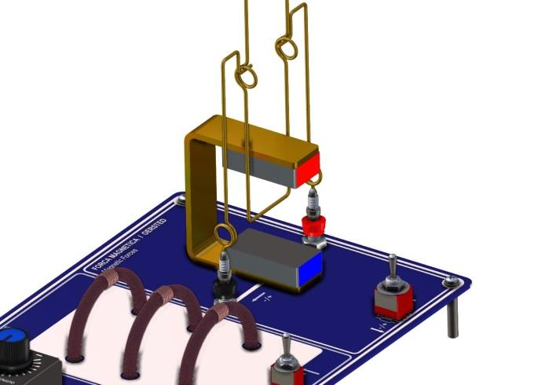
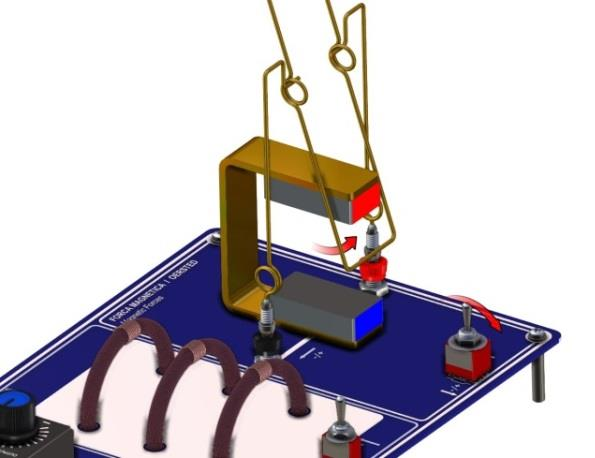
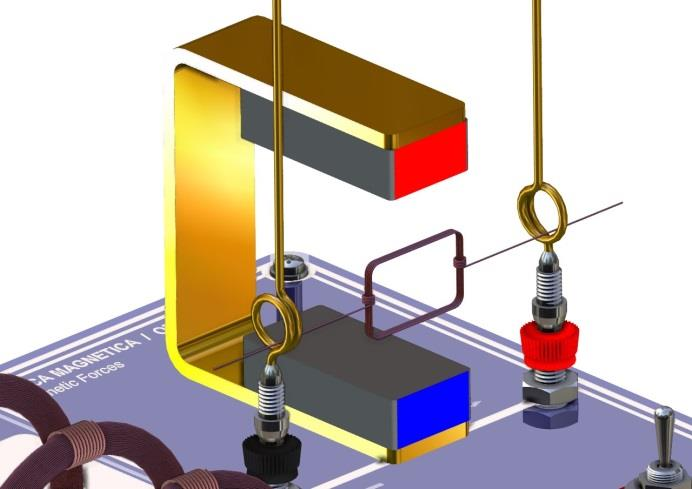
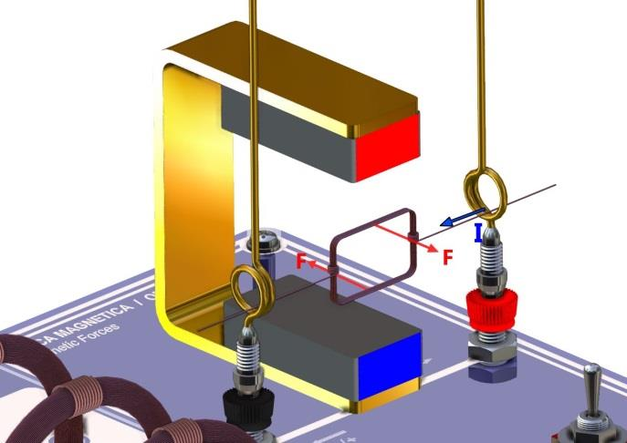

Do desvio de um condutor ao torque sustentado de um rotor: preveja os
sinais, observe a montagem real e confronte o modelo com o movimento.
Duas partes
Fonte 6 V / 1 A
Força · torque · comutação
Bancada e protocolo
Montagem
A Parte I isola o sinal da força sobre um condutor. A Parte II troca o
balanço pelo rotor e investiga como um par de forças produz rotação.
Objetivos de aprendizagem
Aplicar o produto vetorial para prever a direção da força magnética antes de ligar a fonte.
Testar separadamente o efeito de inverter a corrente e de inverter o campo magnético.
Relacionar o par de forças na espira ao torque, à energia potencial e à estabilidade.
Explicar por que comutação, inércia e dissipação são essenciais ao motor elementar.
Material efetivamente utilizado
1 placa para ensaios de eletromagnetismo;
1 ímã em forma de U;
1 fonte de alimentação de 6 V / 1 A;
1 balanço magnético;
2 torres para experimentos de força magnética;
1 rotor para motor elementar.
Referencial para todas as previsões
Antes de energizar, desenhe três eixos e declare o ponto de vista do
observador. Use no registro as expressões para dentro do ímã,
para fora do ímã, para cima e para baixo.
Marque o sentido convencional da corrente, do borne vermelho para o
preto, e o campo do polo norte para o sul. Sem esse referencial, um
acerto de sinal não pode ser auditado.
Parte I
Balanço e força magnética
Uma variável é invertida por vez. Registre a previsão antes de cada
pulso e a observação somente depois.

Figura 1 — configuração inicial. O trecho inferior
do balanço ocupa o vão do ímã; o polo norte vermelho fica para cima.
Fonte: manual AZEHEB.
Previsão obrigatória antes de energizar.
Com o polo N vermelho para cima, indique o sentido vertical do campo.
Para a corrente do vermelho para o preto, aplique a regra da mão
direita e preveja se o balanço irá para dentro ou para fora do ímã.
Em seguida, preveja o que muda ao inverter apenas a corrente, apenas o
ímã e ambos. Não corrija a previsão depois de observar.
Procedimento da Parte I
Com chave desligada e dial no mínimo, instale as duas torres, o balanço e o ímã em U como na Figura 1. Deixe o polo N vermelho para cima.
Identifique o campo no vão: ele parte do norte e chega ao sul; nesta configuração, o manual o descreve verticalmente para baixo.
Conecte a fonte de 6 V à placa sem alterar o estado desligado. Confira se o balanço se move livremente e anote sua posição de repouso.
Configure a corrente convencional do borne vermelho para o preto e registre a previsão da força.
Ligue por 5–10 s e aumente o dial lentamente, sem ultrapassar metade do curso. Observe o primeiro deslocamento; desligue e aguarde 5–10 s.
Inverta somente o sentido da corrente. Faça uma nova previsão, repita o pulso e registre o deslocamento.
Com chave desligada e dial no mínimo, gire o ímã em U para inverter os polos e o campo. Repita as duas orientações de corrente, sempre prevendo antes de ligar.
Ao terminar, volte o dial ao mínimo e deixe a chave desligada.
O que observar
O sentido do primeiro deslocamento, não a posição final após oscilações.
Se a inversão de uma única variável inverte o sinal do movimento.
Se inverter corrente e campo simultaneamente restaura o sinal inicial.
Folgas, contato com o ímã, assimetria do balanço ou retorno incompleto ao zero.

Figura 2 — resposta do balanço. A inclinação torna
visível o sinal da força; compare-a com sua previsão vetorial, sem
tomar a ilustração como dado medido. Fonte: manual AZEHEB.
Parte II
Motor elementar
O balanço dá lugar à espira: forças opostas nos ramos longos formam
um binário e transferem trabalho ao rotor.

Figura 3 — rotor instalado. A espira deve girar sem
tocar o ímã, os suportes ou cabos. A instalação é feita somente com
a chave desligada. Fonte: manual AZEHEB.
Previsão antes da partida.
Desenhe a corrente nos dois ramos longos da espira, aplique o produto
vetorial em cada ramo e preveja o sentido do par de forças e da
rotação inicial. Indique também as orientações em que o torque seria
máximo ou nulo.
Procedimento da Parte II
Reutilize a placa, as torres e o ímã da Parte I. Desligue a chave, retorne o dial ao mínimo e retire o balanço.
Com a chave ainda desligada, apoie o rotor nos dois suportes circulares e posicione a espira entre os polos do ímã, como na Figura 3.
Gire o rotor à mão, sem energizar, apenas para verificar liberdade de movimento e distância segura de ímã e cabos.
Registre a previsão vetorial. Só então, mantendo a chave desligada, ajuste o dial a uma posição intermediária, correspondente a aproximadamente metade do curso.
Ligue a chave. Dê um pequeno impulso no rotor apenas se necessário para vencer uma posição de torque nulo ou o atrito estático.
Se a rotação ficar muito alta, reduza imediatamente a corrente pelo dial ou, com cuidado, afaste ligeiramente o ímã em U.
Observe o sentido de partida e a regularidade durante no máximo 5–10 s. Desligue por 5–10 s antes de uma nova tentativa.
Finalize com a chave desligada e o dial no mínimo.
Critérios de observação
Sentido de partida comparado ao par de forças previsto.
Existência de posições mortas e necessidade real do impulso inicial.
Rotação estável, intermitente, oscilatória ou interrompida.
Efeito qualitativo de reduzir a corrente ou afastar o ímã.
Ruído de contato, atrito nos suportes e desalinhamento do eixo.
Modelo e derivação
Fundamentos
A sequência parte da carga individual, passa ao fio e fecha no modelo
energético e dinâmico do rotor.
1. Da partícula ao elemento de corrente
Para uma carga q com velocidade v em um campo B,
a parte magnética da força de Lorentz é um produto vetorial:
F = qv × B
A força é perpendicular à velocidade e ao campo; por isso o campo magnético não altera diretamente a energia cinética de uma carga pontual.
dF = (nA dℓ) qv_d × B
O volume A dℓ contém nA dℓ portadores, cada um com velocidade de deriva v_d.
I dℓ = nAqv_d dℓ
A orientação de dℓ acompanha a corrente convencional, inclusive quando os portadores microscópicos são elétrons.
dF = I dℓ × B
A soma das forças microscópicas fornece a força sobre um elemento do condutor.
F = BIL sin θ
Para um trecho retilíneo de comprimento L em campo uniforme; aqui θ é o ângulo entre o fio orientado pela corrente e B.
A orientação segue a regra da mão direita para carga positiva ou
corrente convencional. Carga negativa inverte a força microscópica.
No fio, inverter apenas I ou apenas B troca o sinal de
F; inverter ambos preserva o sinal. A força é máxima para 90° e
nula quando o trecho é paralelo ao campo.
2. Da força ao par de forças
Em uma espira retangular situada em campo aproximadamente uniforme,
os ramos opostos recebem forças de mesmo módulo e sentidos opostos.
A soma das forças pode ser zero, mas suas linhas de ação não
coincidem: elas formam um binário. Somando o momento de cada força
em relação ao eixo resulta, para N espiras de área A,
o módulo τ = NIAB sin θ.
μ = NIA
O momento de dipolo magnético tem direção normal ao plano da espira, definida pela regra da mão direita.
τ = μ × B
O torque tende a alinhar o momento magnético com o campo; seu módulo é μB sin θ.
Na expressão do torque, θ é o ângulo entre a normal da espira e o
campo. A Figura 4 deve ser redesenhada no relatório com I,
B e F nos dois ramos, não apenas copiada.

Figura 4 — par de forças no rotor. As forças são
opostas, mas atuam em linhas distintas; por isso o torque resultante
pode ser não nulo. Fonte: manual AZEHEB.
3. Energia, trabalho e estabilidade
U = −μ·B
Em campo uniforme, U = −μB cos θ.
τ_θ = −dU/dθ
O torque aponta para a redução da energia potencial.
dW_em = τ_θ dθ = −dU
O trabalho eletromagnético positivo reduz U e pode aumentar a energia cinética ou vencer uma carga.
O alinhamento μ paralelo a B, θ = 0, minimiza U e é estável. O estado
antiparalelo, θ = π, maximiza U e é instável. Um rotor alimentado sem
comutação não gira indefinidamente: ele tende a alinhar-se, ultrapassa
o mínimo por inércia e pode oscilar até o atrito dissipar a energia.
A fonte elétrica repõe a energia convertida em trabalho mecânico e em
perdas resistivas e de contato.
4. Por que a comutação mantém torque útil
Após meia volta, uma corrente fixa faria o torque mudar de sinal e
frear a rotação que acabou de produzir. Em um motor de corrente
contínua ideal, o comutador inverte a corrente da espira a cada meia
volta; assim, μ também se inverte e o torque mecânico conserva o
sentido útil. O envelope idealizado torna-se aproximadamente
τ_em(θ) = τ₀|sin θ|.
Em rotores didáticos simples, o contato pode interromper a corrente
durante a metade desfavorável em vez de realizar uma reversão
contínua perfeita. Nesse caso, a inércia atravessa a região sem torque
até o contato útil retornar. Nos dois mecanismos, a função da
comutação é impedir um torque eletromagnético sustentado contrário ao
movimento. Atrito, contato imperfeito e as posições em que sin θ = 0
explicam por que um pequeno impulso pode ser necessário.
5. Equação dinâmica mínima
Jθ¨ + bθ˙ = τ_em(θ) − τ_carga
J é o momento de inércia do rotor, θ˙ sua velocidade angular,
θ¨ sua aceleração, b um coeficiente efetivo de atrito viscoso
e τ_carga o torque resistente. Aumentar a corrente eleva o torque
eletromagnético; afastar o ímã reduz o campo e, portanto, o torque.
Em regime médio estável, o torque motor equilibra carga e perdas.
6. Análise dimensional
[qvB] = C·(m/s)·T = N, pois T = N/(A·m) e C/A = s.
[BIL] = T·A·m = N, unidade de força.
[μ] = A·m²; o número de espiras N é adimensional.
[μB] = A·m²·T = N·m = J: torque e energia têm a mesma dimensão, embora sejam grandezas distintas.
[Jθ¨] = kg·m²/s² = N·m e [b] = N·m·s, com o radiano tratado como adimensional.
Registro sem valores fabricados
Dados
Preencha durante a prática. As células permanecem vazias porque o
roteiro não substitui observações por números simulados.
Convenções antes da primeira medida
Desenhe o referencial usado e registre quais polos delimitam o vão.
Use o sentido convencional de I e descreva B do norte para o sul.
Para cada linha, escreva a previsão de F antes de energizar e preserve eventuais previsões incorretas.
Classifique uma observação ambígua como inconclusiva, sem forçar concordância.
Parte I — balanço e sinal da força
Tabela 1 — inversões independentes de corrente e campo
Sentido de I
Polos / sentido de B
Previsão de F
Deslocamento observado
Concordância
Parte II — partida e regime do motor
Tabela 2 — comportamento do rotor em cada tentativa
Configuração
Sentido de partida
Estabilidade
Corrente opcional
Período / rotação opcional
Comparação qualitativa
Teste as relações de sinal F(−I, B) = −F(I, B),
F(I, −B) = −F(I, B) e F(−I, −B) = F(I, B). A evidência é o primeiro
sentido de deslocamento, acompanhado da repetibilidade e do retorno
ao repouso. Para o motor, confronte o sentido inicial com o diagrama
do par de forças e compare a regularidade antes e depois de reduzir
corrente ou campo.
Comparação quantitativa possível
Se B, I, o comprimento ativo L e o ângulo forem medidos
independentemente, compare F_mod = BIL sin θ a uma força
experimental obtida de uma calibração conhecida do balanço. Para o
rotor, com n voltas observadas em um intervalo Δt, use
T = Δt/n e ω = 2πn/Δt. Sem esses instrumentos e calibrações, limite
a conclusão ao sinal e à ordem de grandeza qualitativa.
Incerteza e rastreabilidade
Registre a resolução dos instrumentos opcionais, repetição, oscilação
do balanço, folga, atrito, alinhamento, posição do ímã, aquecimento e
contato elétrico. Para leitura uniforme com menor divisão δx, uma
estimativa é u(x) = δx/√12. Com grandezas independentes, a propagação
do modelo pode ser escrita como:
Para T = Δt/n, se n for contado sem ambiguidade,
u(T)/T ≈ u(Δt)/Δt e u(ω)/ω tem a mesma contribuição relativa. Se o
objetivo for apenas o sentido, relate a incerteza como concordante,
discordante ou inconclusiva e justifique pela observação.
Entrega individual ou em grupo
Relatório
Mostre o encadeamento previsão → observação → modelo. Um desenho
vetorial legível vale mais que uma resposta de sinal sem referencial.
Ao imprimir, somente esta aba e a identificação do experimento serão exibidas.
Estudante(s)
Turma / curso
Data
Bancada / grupo
Professor(a)
Referencial adotado
Parte I — balanço
Inclua a Tabela 1 completa, sem apagar previsões divergentes.
Desenhe I, B e F para as quatro combinações de sinais.
Explique as inversões usando dF = I dℓ × B.
Discuta retorno ao zero, oscilação e eventuais resultados inconclusivos.
Parte II — motor
Inclua a Tabela 2 e o sentido de partida previsto.
Desenhe o par de forças nos dois ramos e o eixo do torque.
Relacione τ = μ × B, U = −μ·B e estabilidade.
Explique comutação, posição morta, impulso inicial e regime observado.
Incerteza e comparação
Separe incerteza de leitura, repetibilidade e limitações do
modelo. Compare quantitativamente apenas as grandezas de fato
medidas com instrumentos identificados; caso contrário, faça a
comparação qualitativa de sinais e declare esse limite.
Conclusão
Responda aos objetivos com evidências das duas partes. Diferencie
confirmação do produto vetorial, explicação do torque e condições
necessárias para rotação sustentada.